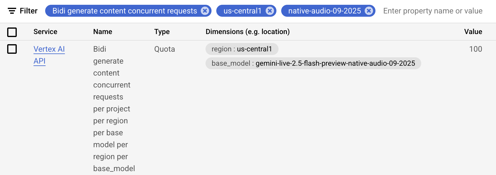

Part 4: Understanding RunConfig¶
In Part 3, you learned how to handle events from run_live() to process model responses, tool calls, and streaming updates. This part shows you how to configure those streaming sessions through RunConfig—controlling response formats, managing session lifecycles, and enforcing production constraints.
What you'll learn: This part covers response modalities and their constraints, explores the differences between BIDI and SSE streaming modes, examines the relationship between ADK Sessions and Live API sessions, and shows how to manage session duration with session resumption and context window compression. You'll understand how to handle concurrent session quotas, implement architectural patterns for quota management, and configure cost controls through max_llm_calls and audio persistence options. With RunConfig mastery, you can build production-ready streaming applications that balance feature richness with operational constraints.
Learn More
For detailed information about audio/video related RunConfig configurations, see Part 5: Audio, Image and Video in Live API.
RunConfig Parameter Quick Reference¶
This table provides a quick reference for all RunConfig parameters covered in this part:
| Parameter | Type | Purpose | Platform Support | Reference |
|---|---|---|---|---|
| response_modalities | list[str] | Control output format (TEXT or AUDIO) | Both | Details |
| streaming_mode | StreamingMode | Choose BIDI or SSE mode | Both | Details |
| session_resumption | SessionResumptionConfig | Enable automatic reconnection | Both | Details |
| context_window_compression | ContextWindowCompressionConfig | Unlimited session duration | Both | Details |
| max_llm_calls | int | Limit total LLM calls per session | Both | Details |
| save_live_blob | bool | Persist audio/video streams | Both | Details |
| custom_metadata | dict[str, Any] | Attach metadata to invocation events | Both | Details |
| support_cfc | bool | Enable compositional function calling | Gemini (2.x models only) | Details |
| speech_config | SpeechConfig | Voice and language configuration | Both | Part 5: Voice Configuration |
| input_audio_transcription | AudioTranscriptionConfig | Transcribe user speech | Both | Part 5: Audio Transcription |
| output_audio_transcription | AudioTranscriptionConfig | Transcribe model speech | Both | Part 5: Audio Transcription |
| realtime_input_config | RealtimeInputConfig | VAD configuration | Both | Part 5: Voice Activity Detection |
| proactivity | ProactivityConfig | Enable proactive audio | Gemini (native audio only) | Part 5: Proactivity and Affective Dialog |
| enable_affective_dialog | bool | Emotional adaptation | Gemini (native audio only) | Part 5: Proactivity and Affective Dialog |
Source Reference
Platform Support Legend:
- Both: Supported on both Gemini Live API and Gemini Live API (Agent Platform)
- Gemini: Only supported on Gemini Live API
- Model-specific: Requires specific model architecture (e.g., native audio)
Import Paths:
All configuration type classes referenced in the table above are imported from google.genai.types:
from google.genai import types
from google.adk.agents.run_config import RunConfig, StreamingMode
# Configuration types are accessed via types module
run_config = RunConfig(
session_resumption=types.SessionResumptionConfig(),
context_window_compression=types.ContextWindowCompressionConfig(...),
speech_config=types.SpeechConfig(...),
# etc.
)
The RunConfig class itself and StreamingMode enum are imported from google.adk.agents.run_config.
Response Modalities¶
Response modalities control how the model generates output—as text or audio. Both Gemini Live API and Gemini Live API (Agent Platform) have the same restriction: only one response modality per session.
Configuration:
# Phase 2: Session initialization - RunConfig determines streaming behavior
# Default behavior: ADK automatically sets response_modalities to ["AUDIO"]
# when not specified (required by native audio models)
run_config = RunConfig(
streaming_mode=StreamingMode.BIDI # Bidirectional WebSocket communication
)
# The above is equivalent to:
run_config = RunConfig(
response_modalities=["AUDIO"], # Automatically set by ADK in run_live()
streaming_mode=StreamingMode.BIDI # Bidirectional WebSocket communication
)
# ✅ CORRECT: Text-only responses
run_config = RunConfig(
response_modalities=["TEXT"], # Model responds with text only
streaming_mode=StreamingMode.BIDI # Still uses bidirectional streaming
)
# ✅ CORRECT: Audio-only responses (explicit)
run_config = RunConfig(
response_modalities=["AUDIO"], # Model responds with audio only
streaming_mode=StreamingMode.BIDI # Bidirectional WebSocket communication
)
Both Gemini Live API and Gemini Live API (Agent Platform) restrict sessions to a single response modality. Attempting to use both will result in an API error:
# ❌ INCORRECT: Both modalities not supported
run_config = RunConfig(
response_modalities=["TEXT", "AUDIO"], # ERROR: Cannot use both
streaming_mode=StreamingMode.BIDI
)
# Error from Live API: "Only one response modality is supported per session"
Default Behavior:
When response_modalities is not specified, ADK's run_live() method automatically sets it to ["AUDIO"] because native audio models require an explicit response modality. You can override this by explicitly setting response_modalities=["TEXT"] if needed.
Key constraints:
- You must choose either
TEXTorAUDIOat session start. Cannot switch between modalities mid-session - You must choose
AUDIOfor Native Audio models. If you want to receive both audio and text responses from native audio models, use the Audio Transcript feature which provides text transcripts of the audio output. See Audio Transcription for details - Response modality only affects model output—you can always send text, voice, or video input (if the model supports those input modalities) regardless of the chosen response modality
StreamingMode: BIDI or SSE¶
ADK supports two distinct streaming modes that use different API endpoints and protocols:
StreamingMode.BIDI: ADK uses WebSocket to connect to the Live API (the bidirectional streaming endpoint vialive.connect())StreamingMode.SSE: ADK uses HTTP streaming to connect to the standard Gemini API (the unary/streaming endpoint viagenerate_content_async())
"Live API" refers specifically to the bidirectional WebSocket endpoint (live.connect()), while "Gemini API" or "standard Gemini API" refers to the traditional HTTP-based endpoint (generate_content() / generate_content_async()). Both are part of the broader Gemini API platform but use different protocols and capabilities.
Note: These modes refer to the ADK-to-Gemini API communication protocol, not your application's client-facing architecture. You can build WebSocket servers, REST APIs, SSE endpoints, or any other architecture for your clients with either mode.
This guide focuses on StreamingMode.BIDI, which is required for real-time audio/video interactions and Live API features. However, it's worth understanding the differences between BIDI and SSE modes to choose the right approach for your use case.
Configuration:
from google.adk.agents.run_config import RunConfig, StreamingMode
# BIDI streaming for real-time audio/video
run_config = RunConfig(
streaming_mode=StreamingMode.BIDI,
response_modalities=["AUDIO"] # Supports audio/video modalities
)
# SSE streaming for text-based interactions
run_config = RunConfig(
streaming_mode=StreamingMode.SSE,
response_modalities=["TEXT"] # Text-only modality
)
Protocol and Implementation Differences¶
The two streaming modes differ fundamentally in their communication patterns and capabilities. BIDI mode enables true bidirectional communication where you can send new input while receiving model responses, while SSE mode follows a traditional request-then-response pattern where you send a complete request and stream back the response.
StreamingMode.BIDI - Bidirectional WebSocket Communication:
BIDI mode establishes a persistent WebSocket connection that allows simultaneous sending and receiving. This enables real-time features like interruptions, live audio streaming, and immediate turn-taking:
sequenceDiagram
participant App as Your Application
participant ADK as ADK
participant Queue as LiveRequestQueue
participant Gemini as Gemini Live API
Note over ADK,Gemini: Protocol: WebSocket
App->>ADK: runner.run_live(run_config)
ADK->>Gemini: live.connect() - WebSocket
activate Gemini
Note over ADK,Queue: Can send while receiving
App->>Queue: send_content(text)
Queue->>Gemini: → Content (via WebSocket)
App->>Queue: send_realtime(audio)
Queue->>Gemini: → Audio blob (via WebSocket)
Gemini-->>ADK: ← Partial response (partial=True)
ADK-->>App: ← Event: partial text/audio
Gemini-->>ADK: ← Partial response (partial=True)
ADK-->>App: ← Event: partial text/audio
App->>Queue: send_content(interrupt)
Queue->>Gemini: → New content
Gemini-->>ADK: ← turn_complete=True
ADK-->>App: ← Event: turn complete
deactivate Gemini
Note over ADK,Gemini: Turn Detection: turn_complete flagStreamingMode.SSE - Unidirectional HTTP Streaming:
SSE (Server-Sent Events) mode uses HTTP streaming where you send a complete request upfront, then receive the response as a stream of chunks. This is a simpler, more traditional pattern suitable for text-based chat applications:
sequenceDiagram
participant App as Your Application
participant ADK as ADK
participant Gemini as Gemini API
Note over ADK,Gemini: Protocol: HTTP
App->>ADK: runner.run(run_config)
ADK->>Gemini: generate_content_stream() - HTTP
activate Gemini
Note over ADK,Gemini: Request sent completely, then stream response
Gemini-->>ADK: ← Partial chunk (partial=True)
ADK-->>App: ← Event: partial text
Gemini-->>ADK: ← Partial chunk (partial=True)
ADK-->>App: ← Event: partial text
Gemini-->>ADK: ← Partial chunk (partial=True)
ADK-->>App: ← Event: partial text
Gemini-->>ADK: ← Final chunk (finish_reason=STOP)
ADK-->>App: ← Event: complete response
deactivate Gemini
Note over ADK,Gemini: Turn Detection: finish_reasonProgressive SSE Streaming¶
Progressive SSE streaming is an experimental feature that enhances how SSE mode delivers streaming responses. When enabled, this feature improves response aggregation by:
- Content ordering preservation: Maintains the original order of mixed content types (text, function calls, inline data)
- Intelligent text merging: Only merges consecutive text parts of the same type (regular text vs thought text)
- Progressive delivery: Marks all intermediate chunks as
partial=True, with a single final aggregated response at the end - Deferred function execution: Skips executing function calls in partial events, only executing them in the final aggregated event to avoid duplicate executions
Enabling the feature:
This is an experimental (WIP stage) feature disabled by default. Enable it via environment variable:
When to use:
- You're using
StreamingMode.SSEand need better handling of mixed content types (text + function calls) - Your responses include thought text (extended thinking) mixed with regular text
- You want to ensure function calls execute only once after complete response aggregation
Note: This feature only affects StreamingMode.SSE. It does not apply to StreamingMode.BIDI (the focus of this guide), which uses the Live API's native bidirectional protocol.
When to Use Each Mode¶
Your choice between BIDI and SSE depends on your application requirements and the interaction patterns you need to support. Here's a practical guide to help you choose:
Use BIDI when:
- Building voice/video applications with real-time interaction
- Need bidirectional communication (send while receiving)
- Require Live API features (audio transcription, VAD, proactivity, affective dialog)
- Supporting interruptions and natural turn-taking (see Part 3: Handling Interrupted Flag)
- Implementing live streaming tools or real-time data feeds
- Can plan for concurrent session quotas (50-1,000 sessions depending on platform/tier)
Use SSE when:
- Building text-based chat applications
- Standard request/response interaction pattern
- Using models without Live API support (e.g., Gemini 1.5 Pro, Gemini 1.5 Flash)
- Simpler deployment without WebSocket requirements
- Need larger context windows (Gemini 1.5 supports up to 2M tokens)
- Prefer standard API rate limits (RPM/TPM) over concurrent session quotas
Streaming Mode and Model Compatibility
SSE mode uses the standard Gemini API (generate_content_async) via HTTP streaming, while BIDI mode uses the Live API (live.connect()) via WebSocket. Gemini 1.5 models (Pro, Flash) don't support the Live API protocol and therefore must be used with SSE mode. Gemini 2.0/2.5 Live models support both protocols but are typically used with BIDI mode to access real-time audio/video features.
Standard Gemini Models (1.5 Series) Accessed via SSE¶
While this guide focuses on Bidi-streaming with Gemini 2.0 Live models, ADK also supports the Gemini 1.5 model family through SSE streaming. These models offer different trade-offs—larger context windows and proven stability, but without real-time audio/video features. Here's what the 1.5 series supports when accessed via SSE:
Models:
gemini-pro-latestgemini-flash-latest
Supported:
- ✅ Text input/output (
response_modalities=["TEXT"]) - ✅ SSE streaming (
StreamingMode.SSE) - ✅ Function calling with automatic execution
- ✅ Large context windows (up to 2M tokens for 1.5-pro)
Not Supported:
- ❌ Live audio features (audio I/O, transcription, VAD)
- ❌ Bidi-streaming via
run_live() - ❌ Proactivity and affective dialog
- ❌ Video input
Understanding Live API Connections and Sessions¶
When building ADK Gemini Live API Toolkit applications, it's essential to understand how ADK manages the communication layer between itself and the Live API backend. This section explores the fundamental distinction between connections (the WebSocket transport links that ADK establishes to Live API) and sessions (the logical conversation contexts maintained by Live API). Unlike traditional request-response APIs, the Bidi-streaming architecture introduces unique constraints: connection timeouts, session duration limits that vary by modality (audio-only vs audio+video), finite context windows, and concurrent session quotas that differ between Gemini Live API and Gemini Live API (Agent Platform).
ADK Session vs Live API Session¶
Understanding the distinction between ADK Session and Live API session is crucial for building reliable streaming applications with ADK Gemini Live API Toolkit.
ADK Session (managed by SessionService):
- Persistent conversation storage for conversation history, events, and state, created via SessionService.create_session()
- Storage options: in-memory, database (PostgreSQL/MySQL/SQLite), or Agent Platform
- Survives across multiple run_live() calls and application restarts (with the persistent SessionService)
Live API session (managed by Live API backend):
- Maintained by the Live API during the run_live() event loop is running, and destroyed when streaming ends by calling LiveRequestQueue.close()
- Subject to platform duration limits, and can be resumed across multiple connections using session resumption handles (see How ADK Manages Session Resumption below)
How they work together:
- When
run_live()is called: - Retrieves the ADK
SessionfromSessionService - Initializes the Live API session with conversation history from
session.events - Streams events bidirectionally with the Live API backend
- Updates the ADK
Sessionwith new events as they occur - When
run_live()ends - The Live API session terminates
- The ADK
Sessionpersists - When
run_live()is called again or the application is restarted:- ADK loads the history from the ADK
Session - Creates a new Live API session with that context
- ADK loads the history from the ADK
In short, ADK Session provides persistent, long-term conversation storage, while Live API sessions are ephemeral streaming contexts. This separation enables production applications to maintain conversation continuity across network interruptions, application restarts, and multiple streaming sessions.
The following diagram illustrates the relationship between ADK Session persistence and ephemeral Live API session contexts, showing how conversation history is maintained across multiple run_live() calls:
sequenceDiagram
participant App as Your Application
participant SS as SessionService
participant ADK_Session as ADK Session<br/>(Persistent Storage)
participant ADK as ADK (run_live)
participant LiveSession as Live API Session<br/>(Ephemeral)
Note over App,LiveSession: First run_live() call
App->>SS: get_session(user_id, session_id)
SS->>ADK_Session: Load session data
ADK_Session-->>SS: Session with events history
SS-->>App: Session object
App->>ADK: runner.run_live(...)
ADK->>LiveSession: Initialize with history from ADK Session
activate LiveSession
Note over ADK,LiveSession: Bidirectional streaming...
ADK->>ADK_Session: Update with new events
App->>ADK: queue.close()
ADK->>LiveSession: Terminate
deactivate LiveSession
Note over LiveSession: Live API session destroyed
Note over ADK_Session: ADK Session persists
Note over App,LiveSession: Second run_live() call (or after restart)
App->>SS: get_session(user_id, session_id)
SS->>ADK_Session: Load session data
ADK_Session-->>SS: Session with events history
SS-->>App: Session object (with previous history)
App->>ADK: runner.run_live(...)
ADK->>LiveSession: Initialize new session with full history
activate LiveSession
Note over ADK,LiveSession: Bidirectional streaming continues...Key insights:
- ADK Session survives across multiple run_live() calls and app restarts
- Live API session is ephemeral - created and destroyed per streaming session
- Conversation continuity is maintained through ADK Session's persistent storage
- SessionService manages the persistence layer (in-memory, database, or Agent Platform)
Now that we understand the difference between ADK Session objects and Live API sessions, let's focus on Live API connections and sessions—the backend infrastructure that powers real-time bidirectional streaming.
Live API Connections and Sessions¶
Understanding the distinction between connections and sessions at the Live API level is crucial for building reliable ADK Gemini Live API Toolkit applications.
Connection: The physical WebSocket link between ADK and the Live API server. This is the network transport layer that carries bidirectional streaming data.
Session: The logical conversation context maintained by the Live API, including conversation history, tool call state, and model context. A session can span multiple connections.
| Aspect | Connection | Session |
|---|---|---|
| What is it? | WebSocket network connection | Logical conversation context |
| Scope | Transport layer | Application layer |
| Can span? | Single network link | Multiple connections via resumption |
| Failure impact | Network error or timeout | Lost conversation history |
Live API Connection and Session Limits by Platform¶
Understanding the constraints of each platform is critical for production planning. Gemini Live API and Gemini Live API (Agent Platform) have different limits that affect how long conversations can run and how many users can connect simultaneously. The most important distinction is between connection duration (how long a single WebSocket connection stays open) and session duration (how long a logical conversation can continue).
| Constraint Type | Gemini Live API (Google AI Studio) |
Gemini Live API (Agent Platform) |
Notes |
|---|---|---|---|
| Connection duration | ~10 minutes | Not documented separately | Each Gemini WebSocket connection auto-terminates; ADK reconnects transparently with session resumption |
| Session Duration (Audio-only) | 15 minutes | 10 minutes | Maximum session duration without context window compression. Both platforms: unlimited with context window compression enabled |
| Session Duration (Audio + video) | 2 minutes | 10 minutes | Gemini has shorter limit for video; Agent Platform treats all sessions equally. Both platforms: unlimited with context window compression enabled |
| Concurrent sessions | 50 (Tier 1) 1,000 (Tier 2+) |
Up to 1,000 | Gemini limits vary by API tier; Agent Platform limit is per Google Cloud project |
Source References
Live API Session Resumption¶
By default, the Live API limits connection duration to approximately 10 minutes—each WebSocket connection automatically closes after this duration. To overcome this limit and enable longer conversations, the Live API provides Session Resumption, a feature that transparently migrates a session across multiple connections. When enabled, the Live API generates resumption handles that allow reconnecting to the same session context, preserving the full conversation history and state.
ADK automates this entirely: When you enable session resumption in RunConfig, ADK automatically handles all reconnection logic—detecting connection closures, caching resumption handles, and reconnecting seamlessly in the background. You don't need to write any reconnection code. Sessions continue seamlessly beyond the 10-minute connection limit, handling connection timeouts, network disruptions, and planned reconnections automatically.
Scope of ADK's Reconnection Management¶
ADK manages the ADK-to-Live API connection (the WebSocket between ADK and the Gemini Live API backend). This is transparent to your application code.
Your application remains responsible for:
- Managing client connections to your application (e.g., user's WebSocket to your FastAPI server)
- Implementing client-side reconnection logic if needed
- Handling network failures between clients and your application
When ADK reconnects to the Live API, your application's event loop continues normally—you keep receiving events from run_live() without interruption. From your application's perspective, the Live API session continues seamlessly.
Configuration:
from google.genai import types
run_config = RunConfig(
session_resumption=types.SessionResumptionConfig()
)
When NOT to Enable Session Resumption:
While session resumption is recommended for most production applications, consider these scenarios where you might not need it:
- Short sessions (<10 minutes): If your sessions typically complete within the ~10 minute connection timeout, resumption adds unnecessary overhead
- Stateless interactions: Request-response style interactions where each turn is independent don't benefit from session continuity
- Development/testing: Simpler debugging when each session starts fresh without carrying over state
- Cost-sensitive deployments: Session resumption may incur additional platform costs or resource usage (verify with your platform)
Best practice: Enable session resumption by default for production, disable only when you have a specific reason not to use it.
How ADK Manages Session Resumption¶
While session resumption is supported by both Gemini Live API and Gemini Live API (Agent Platform), using it directly requires managing resumption handles, detecting connection closures, and implementing reconnection logic. ADK takes full responsibility for this complexity, automatically utilizing session resumption behind the scenes so developers don't need to write any reconnection code. You simply enable it in RunConfig, and ADK handles everything transparently.
ADK's automatic management:
- Initial Connection: ADK establishes a WebSocket connection to Live API
- Handle Updates: Throughout the session, the Live API sends
session_resumption_updatemessages containing updated handles. ADK automatically caches the latest handle inInvocationContext.live_session_resumption_handle - Graceful Connection Close: When the ~10 minute connection limit is reached, the WebSocket closes gracefully (no exception)
- Automatic Reconnection: ADK's internal loop detects the close and automatically reconnects using the most recent cached handle
- Session Continuation: The same session continues seamlessly with full context preserved
Implementation Detail
During reconnection, ADK retrieves the cached handle from InvocationContext.live_session_resumption_handle and includes it in the new LiveConnectConfig for the live.connect() call. This is handled entirely by ADK's internal reconnection loop—developers never need to access or manage these handles directly.
Sequence Diagram: Automatic Reconnection¶
The following sequence diagram illustrates how ADK automatically manages Live API session resumption when the ~10 minute connection timeout is reached. ADK detects the graceful close, retrieves the cached resumption handle, and reconnects transparently without application code changes:
sequenceDiagram
participant App as Your Application
participant ADK as ADK (run_live)
participant WS as WebSocket Connection
participant API as Live API (Gemini/Agent Platform)
participant LiveSession as Live Session Context
Note over App,LiveSession: Initial Connection (with session resumption enabled)
App->>ADK: runner.run_live(run_config=RunConfig(session_resumption=...))
ADK->>API: WebSocket connect()
activate WS
API->>LiveSession: Create new session
activate LiveSession
Note over ADK,API: Bidirectional Streaming (0-10 minutes)
App->>ADK: send_content(text) / send_realtime(audio)
ADK->>API: → Content via WebSocket
API->>LiveSession: Update conversation history
API-->>ADK: ← Streaming response
ADK-->>App: ← yield event
Note over API,LiveSession: Live API sends resumption handle updates
API-->>ADK: session_resumption_update { new_handle: "abc123" }
ADK->>ADK: Cache handle in InvocationContext
Note over WS,API: ~10 minutes elapsed - Connection timeout
API->>WS: Close WebSocket (graceful close)
deactivate WS
Note over LiveSession: Session context preserved
Note over ADK: Graceful close detected - No exception raised
ADK->>ADK: while True loop continues
Note over ADK,API: Automatic Reconnection
ADK->>API: WebSocket connect(session_resumption.handle="abc123")
activate WS
API->>LiveSession: Attach to existing session
API-->>ADK: Session resumed with full context
Note over ADK,API: Bidirectional Streaming Continues
App->>ADK: send_content(text) / send_realtime(audio)
ADK->>API: → Content via WebSocket
API->>LiveSession: Update conversation history
API-->>ADK: ← Streaming response
ADK-->>App: ← yield event
Note over App,LiveSession: Session continues until duration limit or explicit close
deactivate WS
deactivate LiveSessionEvents and Session Persistence
For details on which events are saved to the ADK Session versus which are only yielded during streaming, see Part 3: Events Saved to ADK Session.
Live API Context Window Compression¶
Problem: Live API sessions face two critical constraints that limit conversation duration. First, session duration limits impose hard time caps: without compression, Gemini Live API limits audio-only sessions to 15 minutes and audio+video sessions to just 2 minutes, while Agent Platform limits all sessions to 10 minutes. Second, context window limits restrict conversation length: models have finite token capacities (128k tokens for gemini-2.5-flash-native-audio-preview-12-2025, 32k-128k for Agent Platform models). Long conversations—especially extended customer support sessions, tutoring interactions, or multi-hour voice dialogues—will hit either the time limit or the token limit, causing the session to terminate or lose critical conversation history.
Solution: Context window compression solves both constraints simultaneously. It uses a sliding-window approach to automatically compress or summarize earlier conversation history when the token count reaches a configured threshold. The Live API preserves recent context in full detail while compressing older portions. Critically, enabling context window compression extends session duration to unlimited time, removing the session duration limits (15 minutes for audio-only / 2 minutes for audio+video on Gemini Live API; 10 minutes for all sessions on Agent Platform) while also preventing token limit exhaustion. However, there is a trade-off: as the feature summarizes earlier conversation history rather than retaining it all, the detail of past context will be gradually lost over time. The model will have access to compressed summaries of older exchanges, not the full verbatim history.
Platform Behavior and Official Limits¶
Session duration management and context window compression are Live API platform features. ADK configures these features via RunConfig and passes the configuration to the Live API, but the actual enforcement and implementation are handled by the Gemini Live API backends.
Important: The duration limits and "unlimited" session behavior mentioned in this guide are based on current Live API behavior. These limits are subject to change by Google. Always verify current session duration limits and compression behavior in the official documentation:
ADK provides an easy way to configure context window compression through RunConfig. However, developers are responsible for appropriately configuring the compression parameters (trigger_tokens and target_tokens) based on their specific requirements—model context window size, expected conversation patterns, and quality needs:
from google.genai import types
from google.adk.agents.run_config import RunConfig
# For gemini-2.5-flash-native-audio-preview-12-2025 (128k context window)
run_config = RunConfig(
context_window_compression=types.ContextWindowCompressionConfig(
trigger_tokens=100000, # Start compression at ~78% of 128k context
sliding_window=types.SlidingWindow(
target_tokens=80000 # Compress to ~62% of context, preserving recent turns
)
)
)
How it works:
When context window compression is enabled:
- The Live API monitors the total token count of the conversation context
- When the context reaches the
trigger_tokensthreshold, compression activates - Earlier conversation history is compressed or summarized using a sliding window approach
- Recent context (last
target_tokensworth) is preserved in full detail - Two critical effects occur simultaneously:
- Session duration limits are removed (no more 15-minute/2-minute caps on Gemini Live API or 10-minute caps on Agent Platform)
- Token limits are managed (sessions can continue indefinitely regardless of conversation length)
Choosing appropriate thresholds:
- Set
trigger_tokensto 70-80% of your model's context window to allow headroom - Set
target_tokensto 60-70% to provide sufficient compression - Test with your actual conversation patterns to optimize these values
Parameter Selection Strategy:
The examples above use 78% for trigger_tokens and 62% for target_tokens. Here's the reasoning:
- trigger_tokens at 78%: Provides a buffer before hitting the hard limit
- Allows room for the current turn to complete
- Prevents mid-response compression interruptions
-
Typical conversations can continue for several more turns
-
target_tokens at 62%: Leaves substantial room after compression
- 16 percentage points (78% - 62%) freed up per compression
- Allows for multiple turns before next compression
-
Balances preservation of context with compression frequency
-
Adjusting for your use case:
- Long turns (detailed technical discussions): Increase buffer → 70% trigger, 50% target
- Short turns (quick Q&A): Tighter margins → 85% trigger, 70% target
- Context-critical (requires historical detail): Higher target → 80% trigger, 70% target
- Performance-sensitive (minimize compression overhead): Lower trigger → 70% trigger, 50% target
Always test with your actual conversation patterns to find optimal values.
When NOT to Use Context Window Compression¶
While compression enables unlimited session duration, consider these trade-offs:
Context Window Compression Trade-offs:
| Aspect | With Compression | Without Compression | Best For |
|---|---|---|---|
| Session Duration | Unlimited | 15 min (audio) 2 min (video) Gemini 10 min Agent Platform |
Compression: Long sessions No compression: Short sessions |
| Context Quality | Older context summarized | Full verbatim history | Compression: General conversation No compression: Precision-critical |
| Latency | Compression overhead | No overhead | Compression: Async scenarios No compression: Real-time |
| Memory Usage | Bounded | Grows with session | Compression: Long sessions No compression: Short sessions |
| Implementation | Configure thresholds | No configuration | Compression: Production No compression: Prototypes |
Common Use Cases:
✅ Enable compression when: - Sessions need to exceed platform duration limits (15/2/10 minutes) - Extended conversations may hit token limits (128k for 2.5-flash) - Customer support sessions that can last hours - Educational tutoring with long interactions
❌ Disable compression when: - All sessions complete within duration limits - Precision recall of early conversation is critical - Development/testing phase (full history aids debugging) - Quality degradation from summarization is unacceptable
Best practice: Enable compression only when you need sessions longer than platform duration limits OR when conversations may exceed context window token limits.
Best Practices for Live API Connection and Session Management¶
Essential: Enable Session Resumption¶
- ✅ Always enable session resumption in RunConfig for production applications
- ✅ This enables ADK to automatically handle Gemini's ~10 minute connection timeouts transparently
- ✅ Sessions continue seamlessly across multiple WebSocket connections without user interruption
- ✅ Session resumption handle caching and management
from google.genai import types
run_config = RunConfig(
response_modalities=["AUDIO"],
session_resumption=types.SessionResumptionConfig()
)
Recommended: Enable Context Window Compression for Unlimited Sessions¶
- ✅ Enable context window compression if you need sessions longer than 15 minutes (audio-only) or 2 minutes (audio+video)
- ✅ Once enabled, session duration becomes unlimited—no need to monitor time-based limits
- ✅ Configure
trigger_tokensandtarget_tokensbased on your model's context window - ✅ Test compression settings with realistic conversation patterns
- ⚠️ Use judiciously: Compression adds latency during summarization and may lose conversational nuance—only enable when extended sessions are truly necessary for your use case
from google.genai import types
from google.adk.agents.run_config import RunConfig
run_config = RunConfig(
response_modalities=["AUDIO"],
session_resumption=types.SessionResumptionConfig(),
context_window_compression=types.ContextWindowCompressionConfig(
trigger_tokens=100000,
sliding_window=types.SlidingWindow(target_tokens=80000)
)
)
Optional: Monitor Session Duration¶
Only applies if NOT using context window compression:
- ✅ Focus on session duration limits, not connection timeouts (ADK handles those automatically)
- ✅ Gemini Live API: Monitor for 15-minute limit (audio-only) or 2-minute limit (audio+video)
- ✅ Gemini Live API (Agent Platform): Monitor for 10-minute session limit
- ✅ Warn users 1-2 minutes before session duration limits
- ✅ Implement graceful session transitions for conversations exceeding session limits
Concurrent Live API Sessions and Quota Management¶
Problem: Production voice applications typically serve multiple users simultaneously, each requiring their own Live API session. However, both Gemini Live API and Gemini Live API (Agent Platform) impose strict concurrent session limits that vary by platform and pricing tier. Without proper quota planning and session management, applications can hit these limits quickly, causing connection failures for new users or degraded service quality during peak usage.
Solution: Understand platform-specific quotas, design your architecture to stay within concurrent session limits, implement session pooling or queueing strategies when needed, and monitor quota usage proactively. ADK handles individual session lifecycle automatically, but developers must architect their applications to manage multiple concurrent users within quota constraints.
Understanding Concurrent Live API Session Quotas¶
Both platforms limit how many Live API sessions can run simultaneously, but the limits and mechanisms differ significantly:
Gemini Live API (Google AI Studio) - Tier-based quotas:
| Tier | Concurrent Sessions | TPM (Tokens Per Minute) | Access |
|---|---|---|---|
| Free Tier | Limited* | 1,000,000 | Free API key |
| Tier 1 | 50 | 4,000,000 | Pay-as-you-go |
| Tier 2 | 1,000 | 10,000,000 | Higher usage tier |
| Tier 3 | 1,000 | 10,000,000 | Higher usage tier |
*Free tier concurrent session limits are not explicitly documented but are significantly lower than paid tiers.
Source
Gemini Live API (Agent Platform) - Project-based quotas:
| Resource Type | Limit | Scope |
|---|---|---|
| Concurrent live bidirectional connections | 10 per minute | Per project, per region |
| Maximum concurrent sessions | Up to 1,000 | Per project |
| Session creation/deletion/update | 100 per minute | Per project, per region |
Requesting a quota increase:
To request an increase for Live API concurrent sessions, navigate to the Quotas page in the Google Cloud Console. Filter for the quota named "Bidi generate content concurrent requests" to find quota values for each project, region and base model, and submit a quota increase request. You'll need the Quota Administrator role (roles/servicemanagement.quotaAdmin) to make the request. See View and manage quotas for detailed instructions.

Key differences:
-
Gemini Live API: Concurrent session limits scale dramatically with API tier (50 → 1,000 sessions). Best for applications with unpredictable or rapidly scaling user bases willing to pay for higher tiers.
-
Gemini Live API (Agent Platform): Rate-limited by connection establishment rate (10/min) but supports up to 1,000 total concurrent sessions. Best for enterprise applications with gradual scaling patterns and existing Google Cloud infrastructure. Additionally, you can request quota increases to prepare for production deployments with higher concurrency requirements.
Architectural Patterns for Managing Quotas¶
Once you understand your concurrent session quotas, the next challenge is architecting your application to operate effectively within those limits. The right approach depends on your expected user concurrency, scaling requirements, and tolerance for queueing. This section presents two architectural patterns—from simple direct mapping for low-concurrency applications to session pooling with queueing for applications that may exceed quota limits during peak usage. Choose the pattern that matches your current scale and design it to evolve as your user base grows.
Choosing the Right Architecture:
Start: Designing Quota Management
|
v
Expected Concurrent Users?
/ \
< Quota Limit > Quota Limit or Unpredictable
| |
v v
Pattern 1: Direct Mapping Pattern 2: Session Pooling
- Simple 1:1 mapping - Queue waiting users
- No quota logic - Graceful degradation
- Fast development - Peak handling
| |
v v
Good for: Good for:
- Prototypes - Production at scale
- Small teams - Unpredictable load
- Controlled users - Public applications
Quick Decision Guide:
| Factor | Direct Mapping | Session Pooling |
|---|---|---|
| Expected users | Always < quota | May exceed quota |
| User experience | Always instant | May wait during peaks |
| Implementation complexity | Low | Medium |
| Operational overhead | None | Monitor queue depth |
| Best for | Prototypes, internal tools | Production, public apps |
Pattern 1: Direct Mapping (Simple Applications)¶
For small-scale applications where concurrent users will never exceed quota limits, create a dedicated Live API session for each connected user with a simple 1:1 mapping:
- When a user connects: Immediately start a
run_live()session for them - When they disconnect: The session ends
- No quota management logic: Assumes your total concurrent users will always stay below your quota limits
This is the simplest possible architecture and works well for prototypes, development environments, and small-scale applications with predictable user loads.
Pattern 2: Session Pooling with Queueing¶
For applications that may exceed concurrent session limits during peak usage, track the number of active Live API sessions and enforce your quota limit at the application level:
- When a new user connects: Check if you have available session slots
- If slots are available: Start a session immediately
- If you've reached your quota limit:
- Place the user in a waiting queue
- Notify them they're waiting for an available slot
- As sessions end: Automatically process the queue to start sessions for waiting users
This provides graceful degradation—users wait briefly during peak times rather than experiencing hard connection failures.
Miscellaneous Controls¶
ADK provides additional RunConfig options to control session behavior, manage costs, and persist audio data for debugging and compliance purposes.
run_config = RunConfig(
# Limit total LLM calls per invocation
max_llm_calls=500, # Default: 500 (prevents runaway loops)
# 0 or negative = unlimited (use with caution)
# Save audio/video artifacts for debugging/compliance
save_live_blob=True, # Default: False
# Attach custom metadata to events
custom_metadata={"user_tier": "premium", "session_type": "support"}, # Default: None
# Enable compositional function calling (experimental)
support_cfc=True # Default: False (Gemini 2.x models only)
)
max_llm_calls¶
This parameter caps the total number of LLM invocations allowed per invocation context, providing protection against runaway costs and infinite agent loops.
Limitation for BIDI Streaming:
The max_llm_calls limit does NOT apply to run_live() with StreamingMode.BIDI. This parameter only protects SSE streaming mode and run_async() flows. If you're building bidirectional streaming applications (the focus of this guide), you will NOT get automatic cost protection from this parameter.
For Live streaming sessions, implement your own safeguards:
- Session duration limits
- Turn count tracking
- Custom cost monitoring by tracking token usage in model turn events (see Part 3: Event Types and Handling)
- Application-level circuit breakers
save_live_blob¶
This parameter controls whether audio and video streams are persisted to ADK's session and artifact services for debugging, compliance, and quality assurance purposes.
Migration Note: save_live_audio Deprecated
If you're using save_live_audio: This parameter has been deprecated in favor of save_live_blob. ADK will automatically migrate save_live_audio=True to save_live_blob=True with a deprecation warning, but this compatibility layer will be removed in a future release. Update your code to use save_live_blob instead.
Currently, only audio is persisted by ADK's implementation. When enabled, ADK persists audio streams to:
- Session service: Conversation history includes audio references
- Artifact service: Audio files stored with unique IDs
Use cases:
- Debugging: Voice interaction issues, assistant behavior analysis
- Compliance: Audit trails for regulated industries (healthcare, financial services)
- Quality Assurance: Monitoring conversation quality, identifying issues
- Training Data: Collecting data for model improvement
- Development/Testing: Testing environments and cost-sensitive deployments
Storage considerations:
Enabling save_live_blob=True has significant storage implications:
- Audio file sizes: At 16kHz PCM, audio input generates ~1.92 MB per minute
- Session storage: Audio is stored in both session service and artifact service
- Retention policy: Check your artifact service configuration for retention periods
- Cost impact: Storage costs can accumulate quickly for high-volume voice applications
Best practices:
- Enable only when needed (debugging, compliance, training)
- Implement retention policies to auto-delete old audio artifacts
- Consider sampling (e.g., save 10% of sessions for quality monitoring)
- Use compression if supported by your artifact service
custom_metadata¶
This parameter allows you to attach arbitrary key-value metadata to events generated during the current invocation. The metadata is stored in the Event.custom_metadata field and persisted to session storage, enabling you to tag events with application-specific context for analytics, debugging, routing, or compliance tracking.
Configuration:
from google.adk.agents.run_config import RunConfig
# Attach metadata to all events in this invocation
run_config = RunConfig(
custom_metadata={
"user_tier": "premium",
"session_type": "customer_support",
"campaign_id": "promo_2025",
"ab_test_variant": "variant_b"
}
)
How it works:
When you provide custom_metadata in RunConfig:
- Metadata attachment: The dictionary is attached to every
Eventgenerated during the invocation - Session persistence: Events with metadata are stored in the session service (database, Agent Platform, or in-memory)
- Event access: Retrieve metadata from any event via
event.custom_metadata - A2A integration: For Agent-to-Agent (A2A) communication, ADK automatically propagates A2A request metadata to this field
Type specification:
The metadata is a flexible dictionary accepting any JSON-serializable values (strings, numbers, booleans, nested objects, arrays).
Use cases:
- User segmentation: Tag events with user tier, subscription level, or cohort information
- Session classification: Label sessions by type (support, sales, onboarding) for analytics
- Campaign tracking: Associate events with marketing campaigns or experiments
- A/B testing: Track which variant of your application generated the event
- Compliance: Attach jurisdiction, consent flags, or data retention policies
- Debugging: Add trace IDs, feature flags, or environment identifiers
- Analytics: Store custom dimensions for downstream analysis
Example - Retrieving metadata from events:
async for event in runner.run_live(
session=session,
live_request_queue=queue,
run_config=RunConfig(
custom_metadata={"user_id": "user_123", "experiment": "new_ui"}
)
):
if event.custom_metadata:
print(f"User: {event.custom_metadata.get('user_id')}")
print(f"Experiment: {event.custom_metadata.get('experiment')}")
Agent-to-Agent (A2A) integration:
When using RemoteA2AAgent, ADK automatically extracts metadata from A2A requests and populates custom_metadata:
# A2A request metadata is automatically mapped to custom_metadata
# Source: a2a/converters/request_converter.py
custom_metadata = {
"a2a_metadata": {
# Original A2A request metadata appears here
}
}
This enables seamless metadata propagation across agent boundaries in multi-agent architectures.
Best practices:
- Use consistent key naming conventions across your application
- Avoid storing sensitive data (PII, credentials) in metadata—use encryption if necessary
- Keep metadata size reasonable to minimize storage overhead
- Document your metadata schema for team consistency
- Consider using metadata for session filtering and search in production debugging
support_cfc (Experimental)¶
This parameter enables Compositional Function Calling (CFC), allowing the model to orchestrate multiple tools in sophisticated patterns—calling tools in parallel, chaining outputs as inputs to other tools, or conditionally executing tools based on intermediate results.
⚠️ Experimental Feature: CFC support is experimental and subject to change.
Critical behavior: When support_cfc=True, ADK always uses the Live API (WebSocket) internally, regardless of the streaming_mode setting. This is because only the Live API backend supports CFC capabilities.
# Even with SSE mode, ADK routes through Live API when CFC is enabled
run_config = RunConfig(
support_cfc=True,
streaming_mode=StreamingMode.SSE # ADK uses Live API internally
)
Model requirements:
ADK validates CFC compatibility at session initialization and will raise an error if the model is unsupported:
- ✅ Supported:
gemini-2.xmodels (e.g.,gemini-2.5-flash-native-audio-preview-12-2025) - ❌ Not supported:
gemini-1.5-xmodels - Validation: ADK checks that the model name starts with
gemini-2whensupport_cfc=True(runners.py:1354-1360) - Code executor: ADK automatically injects
BuiltInCodeExecutorwhen CFC is enabled for safe parallel tool execution
CFC capabilities:
- Parallel execution: Call multiple independent tools simultaneously (e.g., fetch weather for multiple cities at once)
- Function chaining: Use one tool's output as input to another (e.g.,
get_location()→get_weather(location)) - Conditional execution: Execute tools based on intermediate results from prior tool calls
Use cases:
CFC is designed for complex, multi-step workflows that benefit from intelligent tool orchestration:
- Data aggregation from multiple APIs simultaneously
- Multi-step analysis pipelines where tools feed into each other
- Complex research tasks requiring conditional exploration
- Any scenario needing sophisticated tool coordination beyond sequential execution
For bidirectional streaming applications: While CFC works with BIDI mode, it's primarily optimized for text-based tool orchestration. For real-time audio/video interactions (the focus of this guide), standard function calling typically provides better performance and simpler implementation.
Learn more:
- Gemini Function Calling Guide - Official documentation on compositional and parallel function calling
- ADK Parallel Functions Example - Working example with async tools
- ADK Performance Guide - Best practices for parallel-ready tools
Summary¶
In this part, you learned how RunConfig enables sophisticated control over ADK Gemini Live API Toolkit sessions through declarative configuration. We covered response modalities and their constraints, explored the differences between BIDI and SSE streaming modes, examined the relationship between ADK Sessions and Live API sessions, and learned how to manage session duration with session resumption and context window compression. You now understand how to handle concurrent session quotas, implement architectural patterns for quota management, configure cost controls through max_llm_calls and audio persistence options. With RunConfig mastery, you can build production-ready streaming applications that balance feature richness with operational constraints—enabling extended conversations, managing platform limits, controlling costs effectively, and monitoring resource consumption.
← Previous: Part 3: Event Handling with run_live() | Next: Part 5: How to Use Audio, Image and Video →